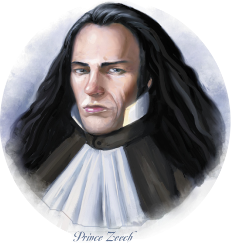

Week 39 - Gauthakan behaves himself; or, Angels watching over me
Well! This week went far better than I thought it would. I find urban adventures a little intimidating, but heck - I’ve been DMming almost every week for over a year now, so I can’t put myself in the “newbie DM” bucket anymore. But everything went smoothly. Even Gauthakan got some play time. Dave’s new character - Mend - did not ... but Dave’s pretty quiet most of the time anyway.
Just some DM notes for anyone else running this module:
There are over a dozen NPCs at the party, and I am not an actor/storyteller able to manage the hopes, dreams, and stats of that many characters all on my own. And our group are not heavy role-players anyway. So I read out some colour text for each NPC and noted their name and attitude toward the party. At each stage of the celebrations, I permitted each character to chat up and schmooze 2 NPCs of their choice. The character would make a diplomacy check to influence the attitude of the NPC, then a sense motive vs bluff to determine the NPC’s new attitude. The sense motive is necessary because at a party, everyone is being charming and false.
There are plenty of “stages” in the module, so this means that the players could gradually improve an NPC’s attitude over the course of the evening, without having to do it in a single heroic check. Of course: getting someone to “helpful” at the party does not mean that they stay helpful for the rest of the campaign! It’s only a party, after all.
Doing this made the evening easier to manage and imposed some structure on the session. And it gave the players choices - who to schmooze? The one who looks useful to know, or the one that’s easier to impress? In retrospect, our party really only has one good diplomat (although Mend is pretty good, too), so perhaps I might have made it three NPCs per character per “stage”. But the session went till after 11 anyway, so three would have been too much.

The party is dressed in it’s best gear, Gauthakan’s new scales polished black and shiny, Flash the changling in his favourite guise as a hot hot hot human chick with perhaps a trace of elven. They decide that as Gauthakan can be - well, a bit of a problem, he shall go as Flash’s servant/bodyguard. Jericho has left the party - off to pursue a career in house Orien. Mend is not invited, but heck - they’ll just brazen on through.
Drat. I messed this up on the night - his True Seeing would certainly have seen though Mahuudril’s guise, but I missed that Frith had it on. So we’ll just say that Mahuudril had not arrived quite yet and it expired. Good enough.
I didn’t take detailed notes as to who schmoozed whom and when. I’ll manage as best I can.
Guests at the lawn include:
 B’kruss is a tall, well groomed
hobgoblin with a raven perched
on one shoulder.
B’kruss is a tall, well groomed
hobgoblin with a raven perched
on one shoulder.
 Hemriss is a strange combination
of the beautiful and the grotesque.
Her beauty
is marred by two unfortunate physical
deformities. First, her face is misaligned;
the right half of her face is about a half
inch above the left, giving her nose an ugly
twist and her mouth a perpetual upturned
sneer. Second, her back is hunched with
malformed wings; broken feathers protrude
here and here from these mockeries,
and she tries to cover them with a
fine cloak but isn’t always successful. Her
expression is one of bitter cruelty.
Hemriss is a strange combination
of the beautiful and the grotesque.
Her beauty
is marred by two unfortunate physical
deformities. First, her face is misaligned;
the right half of her face is about a half
inch above the left, giving her nose an ugly
twist and her mouth a perpetual upturned
sneer. Second, her back is hunched with
malformed wings; broken feathers protrude
here and here from these mockeries,
and she tries to cover them with a
fine cloak but isn’t always successful. Her
expression is one of bitter cruelty.
❦ ❦ Gathering in the Vertiginous Terrace ❦ ❦
“My lords, ladies, and other honored guests! Prince Zeech bids you welcome, and I trust you will enjoy the hospitality of his humble home!” The strange little man looks around, leers at some of the guests, then flaps his free arm and lifts the mummified raven up on his shoulder. Using the dead bird as a ventriloquist’s dummy, he chirps out in a raspy voice: “You may now present your gifts to honor the prince!” and then steps back, giggling quietly as the other guests reach into folds in cloaks and pockets.
The party begins. In effect. Each of our heroes makes time to schmooze two of the other guests. Gauthakan elects to taunt B’Kruss, whom he beat in a pig-wrangling challenge. B’Kruss is already ready to take a piece out of Gauthakan, but restrains himself: for now. One of the characters (Mend?) chats with Mitzen Mitchmillow, who notes that the characters did not bring gifts for the prince. “You did bring a present for His Highness?”. Panic! Our heroes root through their various concealed sacks and covertly eye what the other guests have brought - bottles of wine, books, exotic animals in fine cages. All tastefully wrapped, of course, and with a thoughtful card. Drat.
After ten minutes or so, the palace doors are opened, and the man of the hour himself steps out, accompanied by his Jester - a spriggan of all things. The guests line up, in order of precedence, to give their gifts. Our party’s turn eventually comes.
Flash orders Gauthakan forward, and offers to the prince the head of a dragon “killed in his honour”. A present of small value, but hot chick flash smiles winsomely and pulls it off. Frith offers some cheesy amulet that he got from some magic shoppe somewhere. Not good. Mend offers “the blood of his people” - a symbolic vial of mercury. Again, a gift of little value, but Mend manages to be solemn enough that the prince graciously accepts the gift.
All presents carted away, the gathering proceeds to the first event of the night.
❦ ❦ The Harlequinade Mortificatio ❦ ❦
The fool appears again and blows his strange horn. “My masters! We beg you to enjoy our little tale—‘tis a small thing I penned myself, a tale of menace, revenge, lust and death which I have called ‘The Harlequinade Mortificatio.’” The fool moves back, and as he does, the servants arrange a small stage with a backdrop of a town street at night. A wooden moon wafts over the scene, and suddenly a host of animated skeletons dressed as clowns march on stage.
Frith, of course, is horrified my the undead. but he is persuaded not to turn them all then and there. As the play proceeds, more NPCs are schmoozed. Shag Solomon and Hemriss are persons of interest, as is His Lordship Killraven. I think Mahuudril also is chatted with. Gauthakan taunts B’Kruss again, and it’s on. Something will definitely go down by the end of the night.
❦ ❦ The Handsome Slaughter of Curious Avians ❦ ❦
The fool trundles up onto the balcony railing, somehow managing to balance there on stilts as he addresses the guests. “And now, welcome to the Balcony of Expectorance, my friends, and the Handsome Slaughter of Curious Avians!” Two deformed servants march out, carrying between them a large rack of repeating crossbows. Another group of guests wheel out a number of cages filled with brightly colored red birds. “Please, select your weapon, and make ready to...” Prince Zeech cuts him off with a dismissive slap as he steps forward. The fool teeters, but manages to catch his balance and clambers down from the ledge as the prince selects a magnificent-looking crossbow and says, “I’m feeling particularly lucky today. If anyone can bring down more than me, I’ll give the lucky soul a thousand gold coins.”
The party proceeds outside, and the Prince makes his challenge. He proceeds to shoot six birds with a repeating crossbow that is rather nicer than the other crossbows. One or two guests accept, and are careful not to beat the prince. Gauthakan steps forward to have a go. Fortunately, he fumbles the repeating mechanism at one point and only downs five. The party do a little more schmoozing.
❦ ❦ Some Lively Sports and Baiting ❦ ❦
The misshapen gnome retrieves a small oak box from a locked chest and opens it, withdrawing a pair of silver rings. “And now, we come to some lively sports and baiting, my friends! These rings are ensorcelled with magic such that those who wear it can direct the actions and movements of one who has been… specially prepared, as a receiver.” He hobbles over to the prince and hands one of the rings to him. “The prince would like to challenge one of you to an honest fight, utilizing what lives at the other end of these rings as proxies. Are there any of you brave enough to meet the prince’s champion on the field of battle?”
Again, Gauthakan steps forward. He dons the ring but manages to cope with the sudden vertigo of being in a cockatrice’s body. nWhile he battles the prince by proxy, the other members of the party flatter and charm. At last, Gauthakan turns five feral cats to stone, beating the prince’s three, and also defeats the Prince’s cockatrice.
❦ ❦ Bowling the Devious Heads ❦ ❦
“And now, my beautiful friends, we come to the final game of the evening. I present to my wondrous prince an unfortunate criminal named Jack,” announces the Fabler, as he hands the prince a human skull that has been painted black. “And to the rest of you, I present these delicate treasures!” The Fabler indicates the stack of differently colored skulls. “The prince shall throw Jack to the far end of the garden, and the rest of you shall toss a chap of your own. The thrower who comes the closest to Jack shall be declared the winner!”
I think one of the NPCs won this one.
The bowling of the devious heads proceeds, but the emnity between B’Kruss and Gauthakan reaches boiling point and B’Kruss challenges Gauthakan to a duel. Although Gauthakan gould refuse, he accepts, and the gathering moves to a suitable location. Gathakan specifies a battle to the death, with their normal arms. The fight is short. B’Kruss’ body is conveyed away and stripped by the servants. To the victor, the spoils - but after the party is concluded, please.
Bevis’s reaction to this next bit was great, just awesome. I was a tiny bit dissapointed that the party had not met the Blessed Angels earlier, but the reveal here more than made up for it.
And so, to dinner.
Frith does a bit of a double-take when he sees the stained-glass ceiling. Gods! Those are not angels at all! They are Eyrines: evil outsiders from the plane of eternal conflict! At last, the final bit of the puzzle falls into place: how could this city, seemingly so evil, be warded by angels? This explains it all. There is no doubt: the ziggurat, the undead skeletons, the oppression of the common people, the temple of the mockery, the nearly palpable aura of fear - all at last falls into a single evil pattern.
Meanwhile, Lashonna finally arrives and takes her seat. The banquet begins.
❦ ❦ First Course: The Feast of Worms ❦ ❦
Zeech stands and silence falls upon the banquet hall. “My dear friends,“ he begins, and as he does, the decapitated heads above echo the word “friends” in a ghoulish tone. “I bid you enjoy this feast, eat and drink your fill in my humble abode.” He claps his hands once. An instant later the great doors to the kitchen swing open and a trio of manticores enter to the ghoulish hoorahs of the heads. Yet these are no wild monsters—the fire is gone from their eyes, and their wings have been cruelly severed. Even the once ferocious barbs of their long tails have been surgically removed. Each manticore carries great platters on its back, and a host of distorted servants trail behind them, eager to begin serving food.
The whole party - all of ‘em - fumble with the cutlery. The Prince is not happy by this display of oikness: his party was supposed to be a genteel affair. But nothing much seems to come of the Prince’s displeasure … yet.
First on the menu is a goblet containing a green worm. Worm! Worm! Holy shit! But Gauthakan recognises it as a common scrubgrub, and anyway - Frith and Flash have seen Kyuss worms before, and this ain’t one. They eat it. Mmmm. Tasty. Again there is the schmoozing and talking. Diplomacy rolls all around.
The prince’s fool relates a story, and challenges the gathering to match it. But no-one is a bard, so his challenge goes unmet.
❦ ❦ Second Course: Four and Twenty Blackbirds ❦ ❦
It’s a pie. Tasty, and there’s an illusion that happens when it’s first opened. Frith gets trashed on the wine.
The prince’s fool sings a song, and challenges the gathering to match it. But no-one is a bard, so his challenge goes unmet.
❦ ❦ Third Course: Tojbasarrirge ❦ ❦
Delicious Tojbasarrirge! A delicacy of the Prince’s own devising: a whole Tojanda, stuffed with Basilisk, stuffed with Arrowhawk, stuffed with a Stirge, on the beak of which is impaled three olives.
It’s disgusting. Rank. Flash gets a bite down without changing expression, but everyone else can’t hide it. The Prince takes a bite, then announces that the course is finished. The dish is removed, and tossed out into the sea.
❦ ❦ Fourth Course: Purple Worm Aspic ❦ ❦
A dish for the bold! Purple worm is quite poisonous and must be carefully prepared. Is anyone willing to give it a go? The party this morning for breakfast had their usual repast: a Hero’s Feast summoned by Frith. One of the effects of this is to render them all quite immune to poison, so they tuck in without hesitation. After a moment, the rest of the diners follow suit.
Lord Killraven tells stories of his battles against the orcs, and other guests try to match it. But Killraven’s story is the goriest.
❦ ❦ Fifth Course: Sweet Conclusion ❦ ❦
And finally, dessert is brought out. A massive cake with a marzipan prince on top. But oh no! The cake falls apart and the prince falls right into Flash’s lap! Disaster! But the prince’s fool saves the day with a joke, and the gathering retires to the dance floor.
The feast and games done, there is dancing on into the night. Flash arranges a meeting with Lashonna, in a few evening’s time. He also - as the hot chick - utterly wins over the Prince. Some of the party get on the good side of the prince’s Jester, who … is more than he seems (in good fantasy tradition). But the cool thing is Frith’s move.
Frith ducks off to the bathroom, and while there casts True Sight and Detect Undead.
The prince is surrounded at all times by four invisible bodyguards. Blessed Angels. Devils. Mahuudril is not human at all - she is a strange wormlike abberation. And Lashonna - Lashonna - is revealed as a Slver Dragon who pings as undead!!!
Frith drops his concentration on his Detect Undead, heads to the bathroom again, and casts Detect Evil. The Erynies are evil, sure enough. The Prince himself radiates an aura of evil - like a fallen Paladin, and Hemriss - like the half-fiend she is. And Lady Lashonna is not only undead, but evil undead too.
The night concludes. They have their appointment. And more. Now the adventurers are known, almost famous.
- All of them, simply for being at the party
- Flash and Mend, for offering Prince Zeech two crappy cheap gifts and getting away with it
- Gauthakan, for defeating the Prince at Lively Sports and Baiting
- Flash, for handling the Tojbasarrirje with such aplomb
- Everyone, for hooking into the potentially poisonous Purple Worm Aspic
Furthermore, the party are now firm friends with Lord Killraven (another point), and also the spriggan, which does not make them famous but which might affect things later on. In all, a successful night.
Holy crap! Lashonna is a Vampire or worse! And a Silver Dragon! Devils! Blackgaurds! Oh My! Whatever next? Could be good! Stay tuned.